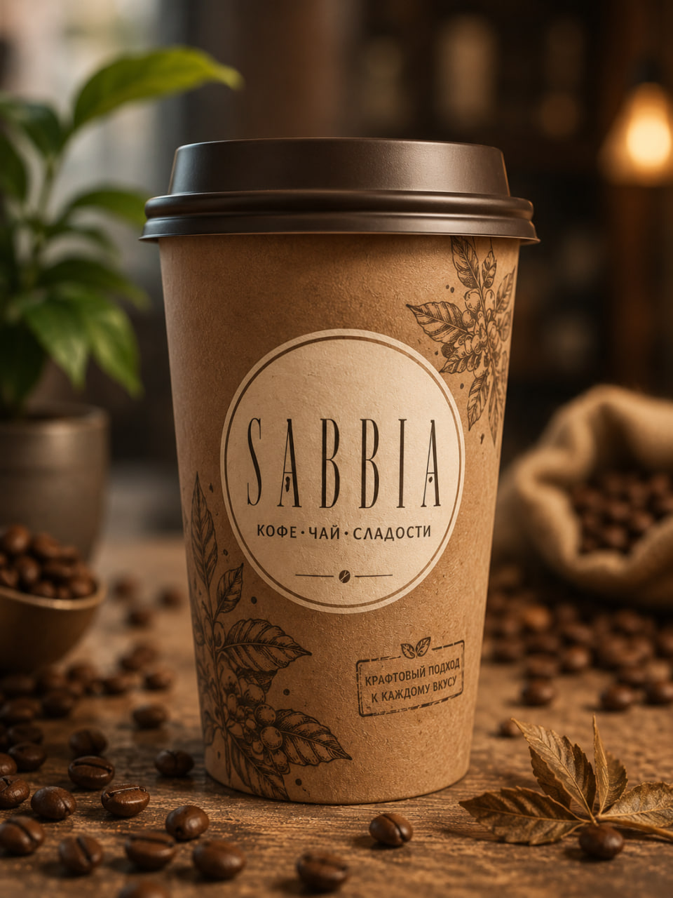

Крафтовый характер
Коричневый стакан, зерно, дерево и мягкие тени.
история бренда
Кофейня, где песочная эстетика встречается с городским ритмом.
не просто кофе
SABBIA звучит мягко и запоминается сразу. В переводе с итальянского это «песок» — поэтому в стиле бренда много крафта, бежевых оттенков, медной турки и спокойного света.

три детали
Коричневый стакан, зерно, дерево и мягкие тени.
Турка, песок и терпкий аромат создают фирменную сцену.
Четыре удобных адреса и понятные маршруты.